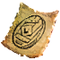
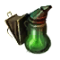

Чертеж: колеса пушек
Предметы / С заданий
Открыть в интерактивной вики →
| Вес | 1 |
|---|
Описание
Тер Нор. Управляющий-складовщик: 6 колес, сложенных под мостом на Замерзшем Озере. Я не досчитался очередных шести штук. Один из носильщиков не донес их. Он славится пьянством, и его иногда видели в пещере под водопадом. Проверить это. Там встречается светящийся мох. Распылить  Рэни
Рэни

Распылитель мутимяты для обнаружения предмета. Запасы мутимяты есть уРэни